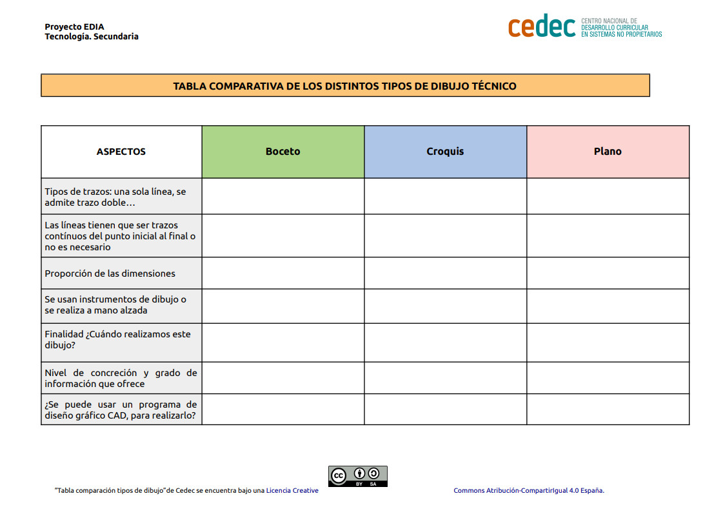

A lo largo de la historia se han usado muchos métodos para representar ideas de tipo técnico, pero sin duda alguna uno de los más poderosos es el dibujo. Desde la antigüedad, el ser humano ha utilizado esta forma de representación gráfica para plasmar sus ideas y pensamientos en una imagen clara y concisa. Con el paso del tiempo, esta técnica se ha ido perfeccionando y adaptando a las necesidades de cada época, llegando a convertirse en una herramienta fundamental para el desarrollo de proyectos en diversos campos, como la ingeniería, la arquitectura, la industria manufacturera, entre otros.
El dibujo técnico permite representar objetos y sistemas de manera precisa y detallada, lo que facilita la comprensión de los mismos y permite detectar posibles errores o fallos en el diseño. Por estas razones, utilizamos el dibujo técnico como una herramienta indispensable en el mundo actual y que tiene unas normas que son aceptadas a nivel mundial y que permite transmitir ideas de una forma eficaz.
Es imprescindible que quede claro las diferentes formas en las que se puede expresar una idea, así como las normas básicas que se han de seguir para poder interpretar el lenguaje del dibujo técnico. Para ello vamos, en primer lugar, a visualizar el siguiente vídeo.
Bocetos ,croquis y planos (Licencia estándar de YouTube)
Tras su visualización y entendiendo las diferencias entre boceto, croquis y plano, vamos a completar la siguiente tabla.

Elena Sánchez Herrera. Tabla comparativa (CC BY-SA)
Una vez que hemos completado la tabla y hemos comprobado la resolución con ayuda del profesor, vamos a proceder a la obtención de datos y realización del croquis con las medidas de nuestro puente.